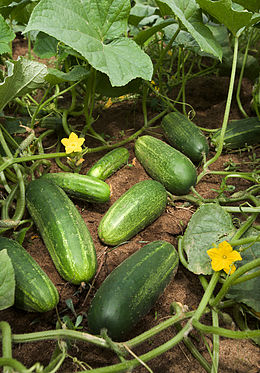

Батьківщина помідорів — Центральна й Південна Америка, де й досі зустрічаються дикі й напівкультурні форми помідорів. В 1498 році Христофор Колумб вперше привіз помідори в Іспанію і Португалію. Перші описи рослини походять з Італії першої половини 16 століття. В 1544 році П'єтро Андреа Матіолі (Pietro Andrea Matthioli) в своєму описі рослини назвав її «Pomi d'oro» (золоте яблуко), а в 1554 році він ввів латинський термін Mala aurea, що має такий же переклад. В XVII й XVIII століття ці рослини використовувалися перш за все як декоративні. У Північній Америці помідори тривалий час вважалися смертельно отруйними. Так, в історії відомий курйоз, коли зі згоди англійського короля Георга III цими «червоними ягодами» намагалися «отруїти» борця за незалежність США Джорджа Вашингтона, який, звичайно, вдало пережив «замах». Були також відомі окремі випадки медичного використання — в англійському перекладі книги Турнафорта (Tournafort) «The Complete Herbal» (1719) згадується, що вже в той час плоди помідорів їли в Італії. А вже наприкінці 18 століття, згідно з енциклопедією «Британіка», вживання плодів помідорів в їжу стало звичним і буденним.
Відомо 7 видів, що дико ростуть у тропічній Америці. Найважливіше господарське значення має 1 вид: Помідор звичайний або їстівний (L. esculentum) — овочева культура. Плоди містять велику кількість вітамінів (B1, B2, C, P, PP), провітамін A, цукри (2.1—8.8 %), яблучну і цитринову кислоту та мінеральні речовини. Помідори споживають сирими, вареними, соленими, маринованими; з них виготовляють томатний сік, томат-пюре. Іноді рід помідор об'єднують із родом паслін (лат. Solanum).

Огірки відомі як овочева рослина близько шести тисяч років, батьківщина огірка — північно-західна Індія.
Плід огірка, як і гарбуза, — гарбузина. В Індії дикі огірки ростуть у лісі, обвиваючи дерева, як ліани. Огірками обплетені паркани в селах. При густій посадці батогакультурних огірків піднімаються нагору, чіпляючись за підставлені для них підпірки. Огірок зображений на фресках Давнього Єгипту та у грецьких храмах, що дозволяє судити про досить поважний його вік.
У Китаї і Японії землевласники знімають урожай цих овочів три рази на рік. Вони спочатку вирощують огірки в ящиках на дахах, а потім висаджують на добре удобрену землю городу й підв'язують до палиць. Зі шпалер звисають величезні плоди огірків довжиною 1,5 м. Цей сорт китайських огірків культивують тепер у Європі в теплицях.
Віддавна огірки були улюбленою овочевою рослиною і в Росії. У розповсюдженому в XVIII столітті посібнику із землеробства читаємо: «Понеже в Росії… огірки краще інших європейських місць ростуть, то тут про них багато й описувати не потрібне».
Петро I видав указ про створення спеціального господарства з вирощування огірків. Було це в XVII столітті, але на столах простих людей огірок уже не був екзотичним продуктом. Мандрівники із Західної Європи відзначали, що огірки на Русі розводяться в неймовірній кількості й не могли зрозуміти, чому вони ростуть у нас краще, ніж у Європі.
Доведено, що регулярне вживання в їжу цього чудо-продукту швидко відновлює сили після різних стресів.
Ось, що писали про огірки у «Лікарському пораднику» триста років тому: «Вода, у якій огірки варені, якщо її прийняти, спрагу гасить, а якщо до того додаєш мазь, складену із соку свороборинного цвіту (шипшини або троянди) із цукром за всіма правилами, тоді цей засіб прохід рухає (підсилює роботу кишечника)».
Огіркові рекорди занесені навіть у книгу Гіннеса. Так найдовший огірок — 1,83 м вирощений в Угорщині й належить до китайського різновиду огірків. У приміщенні вдалося виростити огірок вагою більше 6 кг, а на повітрі ненабагато менше — 3,7 кг.
У часи, коли огірки були великою рідкістю, турецький султан Магомет ІІ, жорстокий і жадібний, одного разу наказав розрізати животи своїм семи підлеглим, щоб довідатися, хто з них з'їв один із присланих йому в подарунок огірків.
Що незвичайно, він єдиний з овочів, плоди якого ми їмо в зеленому виді, недозрілому.
Огірок найдієтичніший з усіх дієтичних продуктів. Він на 95-98 % складається з води, отже, містить мінімум калорій. Але і відсотки, що залишилися, недаремні — огірок є джерелом цінних лужних солей, які здатні уповільнювати процеси старіння і утворення каменів в нирках і печінці. За це огірок називають санітаром організму.
Огірки, всупереч поширеній думці, збуджують апетит і збільшують кислотність шлункового соку — тому ними не можна захоплюватися людям, які страждають гастритом з підвищеною кислотністю, а також виразковою хворобою. У огірках містяться корисні і легкозасвоювані сполуки йоду: учені вважають, що регулярне вживання огірків в їжу покращує роботу щитоподібної залози, серця і судин. Огірки містять багато клітковини — тому відмінно покращують перистальтику кишківника, а також очищають від зайвого холестерину стінки судин. Огірок містить цукор, білок, вітаміни В1 і В2, вітамін С, каротин, хлорофіл, фолієву кислоту, калій, фосфор, залізо, натрій, магній, хлор, марганець, цинк, мідь, хром і навіть срібло. Завдяки великому вмісту калію огірки відмінно «ганяють» зайву рідину, знімають набряки, знижують артеріальний тиск, мають легкий послаблюючий ефект. Сік огірка попереджає перехід вуглеводів в жири і зупиняє відкладення солей. Завдяки низькій калорійності, огірок використовується в різноманітних дієтах для схуднення.

Рослина редис (Raphanus sativus) може бути однолітниками або двулетников, воно відноситься до групи редька роду Редька сімейства хрестоцвіті (Капустяні). Назва «редис» утворилося від латинського слова «radix», яке перекладається як «корінь». Таке скоростигла рослина є лідером серед всіх швидкозростаючих овочевих культур. Редис досить популярний навесні, так як в цей час лише в ньому міститься велика кількість живих вітамінів, які дуже потрібні організму після закінчення зимового періоду.
Редис є дуже популярною овочевою культурою в великій кількості країн. Така рослина являє собою коренеплід, який в поперечнику може досягати від 25 мм і більше, його покриває тоненька шкірка забарвлена в рожевий, червоний або рожево-білий колір. Смак у нього гострий, тому що в його склад входить гірчичне масло.
Такій культурі потрібен тривалий світловий день, щоб коренеплід розвивався в межах норми, його тривалість повинна бути близько 13 год. Період вегетації у нього дуже короткий, в зв'язку з цим ростити редис на своїй ділянці при бажанні можна протягом всього сезону, при цьому висівають його регулярно 1 раз в тиждень.
Такий культурі потрібен тривалий світловий день, щоб коренеплід розвивався в межах норми, його тривалість повинна бути близько 13 год. Період вегетації у нього дуже короткий, в зв'язку з цим ростити редис на своїй ділянці при бажанні можна протягом всього сезону, при цьому висівають його регулярно 1 раз в тиждень.
Редис - джерело корисних речовин. У ньому міститься багато вітаміну С, вітаміни групи В, вітамін РР, а також калій, магній, залізо, фосфор і інші корисні речовини. У редисці міститься клітковина, необхідна для хорошого травлення. Крім того, в цьому овочі - дуже мало калорій (19 калорій в 100 грамах продукту), що робить його просто незамінним для тих, хто стежить за фігурою. Редис може бути протипоказаний людям, що страждає захворюваннями шлунково-кишкового тракту та іншими захворюваннями.
Коли з'явилося листя салату на столах наших предків, достеменно не знає ніхто. Але найперші описи, щодо вирощування і приготування, зустрічаються ще в трактах часів Стародавньої Греції. Вже тоді знали про користь цього чудового продукту.
Багато хто з нас думає, що салат просто харчова трава. Виявляється, нічого подібного - це овочева культура, в яку входить велика кількість видів і сортів салату. Вони такі різні і відрізняються один від одного не тільки за формою. Листя салату може бути хрустким або м'яким, відносно нейтральним за смаком або гіркуватим і навіть гострим, що нагадує прянощі і перець.
Але незмінним залишається одне - величезна користь і багатий «внутрішній зміст» цього продукту.
Але чому саме салат? Чому не капуста, не фрукти? Які корисні властивості ховаються в цих низькокалорійних листках?
Завдяки високому вмісту в листках салату вітамінів, мінералів і макроелементів, він входить в десятку корисних продуктів харчування. Його рекомендують якомога частіше вживати в їжу дітям і людям похилого віку. Адже він позитивно впливає на імунну систему, нормалізує діяльність нервової системи, допомагає швидко відновити сили після тривалої хвороби, має легкий снодійний ефект, сприяє переварюванню їжі, розпалює апетит.
Крім всього цього, листя салату вже дуже давно використовується як кровоочисний засіб. Його застосовують для лікування головного болю. Радять з'їдати хоча б кілька зелених листочків під час магнітних бурь метеозалежним людям. І це далеко не всі можливості даного овочу, корисні властивості якого знайшли своє широке застосування в народній і науковій медицині.
Ну і не можна не згадати про лікувальні властивості салату для шкіри. Він здатний покращувати стан сухої шкіри. Маски з листя салату або настої рекомендують застосовувати для обробки шкіри обличчя, голови і тих ділянок, на яких регулярно відбуваються висипання. Велика кількість вітамінів в салатних листках сприяє нормалізації обмінних процесів у верхніх шарах шкіри і активують роботу шкірних залоз.
Здавалося б, ну як в такому маленькому листочку може поміститися так багато всього корисного всього і відразу?! Салат воістину один з найбагатших овочів за вмістом вітамінів, мікро- і макроелементів.
Все просто: хімічний склад листя салату дозволяє забезпечувати організм максимальною кількістю біологічно активних речовин при мінімумі додаткового баласту.
Так, зелений салат містить велику кількість вітамінів В1 і В9, бета-каротину - попередника вітаміну А, аскорбінової кислоти, вітамінів Е і РР. Цього набору достатньо, щоб справляти корисну дію на багато систем організму і підтримувати його захисні сили.
Чим ще корисні листя салату для організму? Їх мінеральний набір включає в себе залізо, кальцій, магній і калій, властивості яких в організмі різноманітні і дуже важливі.
Калорійність листового салату
Список найбільш низькокалорійних овочевих культур досить широкий і на першому місці серед них знаходиться листовий салат. Енергетична цінність його складає всього 12 ккал на 100 г. Здавалося б, звідки вони в ньому можуть взятися, нехай навіть і в такій мізерно малій кількості.
Всі ми знаємо, що поживна цінність продуктів розраховується виходячи зі змісту білків, вуглеводів і жирів. В аналізованому нами овочі білки з жирами є в дуже малій кількості, зате присутні вуглеводи і різні види цукру. Ось вони і надають салату калорійність.
Колись у давнину греки і римляни дарували букети з кропу коханим дівчатам. І якось не віриться, що запах кропу міг «змагатися» з ароматом троянд. Античні поети оспівували кріп у своїх віршах ... Тепер цього ніхто не робить, бо кріп вже давно перетворився з екзотичного в звичайнісіньке рослина, добре відоме кожному міському і сільському жителю. Однак, думається, тому, що кропу вирощують більше, ставлення до нього стало нітрохи не гірше, а швидше навіть навпаки. Тепер кожна людина має можливість оцінити по достоїнству всі принади цієї пряності. Втім, про все по порядку. Кріп відноситься до сімейства зонтичних, і він - виходець з країн Середземномор'я. У Росії кріп стали розводити починаючи з XVI ст. Тепер він поширений як культурне городнє рослина повсюдно. Якщо захотіти, можна вирощувати кріп протягом цілого року. Він настільки невибагливий, що може рости в горщиках і ящиках на підвіконні. Однак так уже повелося: кріп у нас звикли вживати тільки у свіжому вигляді, прямо з грядки. Заготівля його на зиму, за винятком соляної суміші, майже не ведеться. Треба зауважити, що соляна суміш ліквідує багато цінних якостей кропу і не дає справжньої консервації.
Краще сушити кріп - в такому вигляді він не втрачає ні кольору, ні корисних властивостей і може зберігатися протягом всього року, зрозуміло, якщо сушка проведена за всіма правилами. Історія кропу Кріп - одна з найпоширеніших у нас прянощів. Його додають у салати, супи, м'ясні другі страви, використовують при засолюванні огірків і помідорів. Кріп - обов'язковий компонент сумішей прянощів, використовуваних в грузинської, вірменської, азербайджанської, туркменської, таджицької, узбецької кухнях. Сухий і свіжий кріп можна в збільшених дозах використовувати при гасінні і смаженні риби. Для цього слід пересипати рибу кропом, змішаним з чорним перцем, петрушкою та цибулею, так густо, щоб вона була повністю закрита і лежала б на підстилці із зелені. Таким чином можна смажити морську і річкову рибу - вона стає значно ніжніше. Це один з традиційних прийомів фінської кухні. Взимку поряд з сушеним кропом можна вживати також насіння кропу, які добре зберігаються. Їх можна додавати в коржики і пампушки, в супи, маринади, в юшку, до відвареної та тушкованою рибі. Відомий фахівець з кулінарії В. В. Похлебкин рекомендує в домашній кухні готувати кроповий настій для замісу на ньому лапшового тесту. Цей настій надає приємний аромат домашньої локшини. Готувати його нескладно. У неглибоку каструлю кладуть дрібно нарізаний кріп, заливають невеликою кількістю води і настоюють протягом 2 ч. Після цього кріп добре віджимають і на отриманому настої замішують локшину. Одним з основних речовин, що входять до складу кропу, є ефірне масло. У плодах кропу його міститься до 4%, в траві - 1,5%. Є ще в плодах і жирне масло, якого до 20%. В листі кропу виявлена аскорбінова кислота (близько 100 мг на кожні 100 г). Зауважимо, такої великої кількості вітаміну С немає ні в одному з овочів. Є в кропі також каротин, вітаміни групи В, залізо. Кріп також є хорошим постачальником калію для організму людини. Звідси можна зробити висновок, що він корисний як для дитячого, так і дорослого харчування. З давніх пір кріп служить людям і як лікарська рослина. Згадка про це можна зустріти в різних старовинних трактатах з медицини, а також в народних травниках-лікарських порадниках. Відома медико-ботанічна поема Одо з Мена «Про властивості трав» приділяє велику увагу цілющим властивостям кропу.
У кулінарії використовують зелень та насіння як ароматичну приправу, додаючи до страв з м'яса, риби, овочів, салатів та маринадів, а в цвітучому стані при солінні і маринуванні овочів. Зелень кропу містить багато вітамінів (до 132мг аскорбінової кислоти і до 7 мг каротину) та мікроелементів, які благотворно впливають на стан всіх органів і систем організму. Змолоте насіння кропу додають у чай, що робить його ароматним.
В дієтичному харчуванні зелень кропу застосовується при ожирінні, захворюваннях печінки та жовчного міхура, дискинезії жовчних шляхів, гастритах, метеоризмі. Протягом сторіч наші предки використовували кріп для засолювання капусти, огірків, перцю, грибів, помідорів. Кріп надавав аромат засоленим продуктам, ще й охороняючи їх від плісняви та псування. Ефірне масло з кропу широко застосовується як ароматичний засіб у харчовій і лікеро-горілчаній промисловості. На зелень кріп збирають, коли він досягне висоти 10-12 см, а для технічних цілей після цвітіння, вимикуючи з корінням.
Горох (лат. Pisum) — рід квіткових рослин з родини Бобові. Це однорічнa трав'яниста рослина зі слабкими стеблами, що в'ються. Листки перисті, закінчуються гіллястими (розгалуженими) вусиками, за допомогою яких горох чіпляється за інші поверхні. Родовою відзнакою є триреберний стовпчик у квітці, із жолобком унизу та волосинами нагорі.
Один із засновників генетики, Ґреґор Мендель, вивчав успадкування семи характерних рис гороху та таким чином вивів закони, нині відомі як Закони Менделя (уцілому три генетичні закони).
Рослини гороху самозапильні, перехресне запилення відбувається рідко. Самозапліднення відбувається в бутоні перш ніж розкриється квітка.
Це рід однорічних трав'янистих рослин сімейства бобові. Батьківщиною більшості його видів вважають європейське і африканське Середземномор'ї, а також території Середньої Азії. Археологи стверджують, що насіння гороху використовувалися людиною ще з часів кам'яного віку. Серед інших овочів, ця бобова культура виділяється тим, що в ній міститься велика кількість білка і клітковини, тому вона благотворно впливає на процеси травлення і може стати хорошим протеїновим джерелом для вегетаріанців і спортсменів.
Горох - один з найбагатших джерел рослинного білка, необхідного організму в якості будівельного матеріалу для м'язів і кісток. Також він забезпечує тривале відчуття ситості, оскільки разом з харчовими волокнами, уповільнює травний процес і піднімає рівень гормонів, які зменшують апетит . За вмістом протеїну, горох нерідко порівнюють з м'ясом, і часто цей овоч стає невід'ємною частиною раціону вегетаріанців і веганів. Однак, як би не були схожі білки рослинного і тваринного походження, все-таки вони не тотожні, тому горох не може стати повноцінним замінником м'яса. Вживаючи цей овоч, організм недоотримує незамінну амінокислоту метіонін, що бере участь у великій кількості біохімічних процесів. Для прикладу, в 100 г гороху міститься всього 0,082 г метіоніну, а в 100 г яловичини - 0,588 м З іншого боку, вчені прийшли до висновку, що високий вміст в організмі метіоніну і його похідного - гомоцистеїну - призводить до проблем з судинами, тромбоутворення , активації генів, що провокують старіння. Найкраще, дотримуватися балансу і тримати метіонін в районі мінімальної норми.
Домогтися такого результату можна, знизивши споживання м'яса і додавши в раціон інші джерела білка, такі як горох. Також свіжий зелений горошок забезпечує організму отримання справжнього вітамінного заряду. Овоч відрізняється високою концентрацією вітамінів групи В, а також містить вітаміни С, РР, Е, А, К.
Крім цього, горох багатий такими мікроелементами, як: калій, магній, фосфор, залізо, цинк, селен. Всі ці вітаміни і нутрієнти часто грають ключову роль у багатьох процесах, що протікають в організмі, а їх недостача може привести до серйозних захворювань. Відзначимо, що разом з горохом в організм потрапляє ряд цінних кислот. Наприклад, глутамінова - найважливіший елемент для функціонування головного мозку. Ця нейромедиаторная амінокислота бере активну участь в обміні речовин в тканинах мозку. Незамінна в обмінних процесах організму і пантотенова кислота. Вона також забезпечує синтез холестерину, гемоглобіну, гістаміну. Нарешті, складно переоцінити значення фолієвої кислоти, яка бере участь у формуванні еритроцитів і сприяє нормалізації кровотворення.